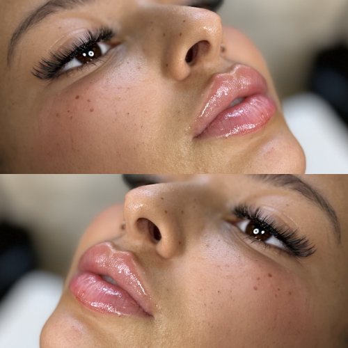
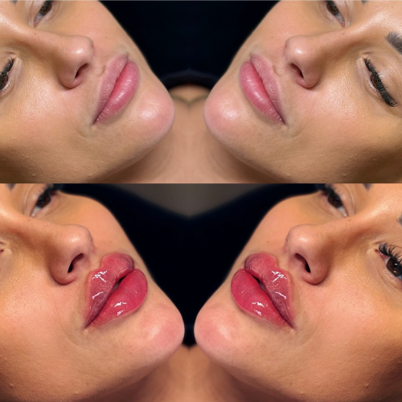

Powiększanie ust – co warto wiedzieć przed zabiegiem?
Powiększanie ust kwasem hialuronowym to jeden z najczęściej wybieranych zabiegów medycyny estetycznej. Nic dziwnego – pozwala na szybkie, stosunkowo bezbolesne uzyskanie pełniejszych, bardziej symetrycznych ust. Zanim jednak zdecydujesz się na ten krok, warto poznać kilka kluczowych informacji, które pomogą Ci przygotować się do zabiegu i cieszyć się pięknym efektem bez komplikacji.
Czym jest powiększanie ust?
To zabieg polegający na podaniu kwasu hialuronowego (substancji naturalnie występującej w organizmie) w czerwień wargową, aby:
- powiększyć objętość ust,
- poprawić ich kształt i kontur
- nawilżyć suche, spierzchnięte usta
- zniwelować asymetrię.
Jak przebiega zabieg?
- Zabieg trwa ok. 30–45 minut.
- Na początku nakładane jest znieczulenie miejscowe (krem lub żel z lidokainą).
- Specjalista ostrzykuje usta cienką igłą lub kaniulą.
- Po zabiegu może wystąpić obrzęk, zaczerwienienie lub drobne siniaki – to normalna reakcja, która znika po kilku dniach.
Kto może, a kto nie powinien robić zabiegu?
Wskazania:
- małe, wąskie lub niesymetryczne usta,
- utrata objętości ust z wiekiem,
- chęć nawilżenia i odświeżenia wyglądu ust.
Przeciwwskazania:
- ciąża i karmienie piersią,
- stany zapalne skóry w okolicy ust (np. opryszczka),
- choroby autoimmunologiczne,
- alergia na składniki preparatu,
- skłonność do blizn przerostowych.

Jak przygotować się do zabiegu?
- Tydzień wcześniej unikaj leków rozrzedzających krew (np. aspiryny, ibuprofenu) – zmniejszysz ryzyko siniaków.
- Dzień wcześniej pij dużo wody – dobrze nawodniony organizm to lepszy efekt.
- Unikaj alkoholu dzień przed i po zabiegu.
- Jeśli masz tendencję do opryszczki, poinformuj o tym specjalistę – może być zalecone przyjęcie leku przeciwwirusowego profilaktycznie.
Jak długo utrzymuje się efekt?
- Efekt utrzymuje się zwykle od 6 do 12 miesięcy – zależnie od rodzaju użytego preparatu, metabolizmu organizmu i stylu życia.
- Stopniowo kwas hialuronowy jest wchłaniany, dlatego efekt zanika powoli.
Czy można osiągnąć naturalny efekt?
Tak! Profesjonalista potrafi dobrać odpowiednią ilość preparatu i technikę modelowania ust, by efekt był subtelny i harmonijny z resztą twarzy. „Nadmuchane” usta to zwykle wynik przesady lub nieprawidłowo wykonanego zabiegu.
Jak dbać o usta po zabiegu?
- Unikaj intensywnego wysiłku fizycznego przez 2–3 dni.
- Nie dotykaj i nie masuj ust bez potrzeby.
- Unikaj sauny, solarium i nadmiernego ciepła przez około tydzień.
- Pij dużo wody i nie używaj mocno perfumowanych kosmetyków.

Czy zabieg jest bezpieczny?
Tak – pod warunkiem, że jest wykonywany przez wykwalifikowanego specjalistę z użyciem certyfikowanych preparatów. Unikaj "domowych zabiegów", promocji podejrzanie niskich cen i niepewnych miejsc.
Podsumowanie:
Powiększanie ust to zabieg, który może znacząco poprawić wygląd i samopoczucie, ale tylko wtedy, gdy jest przeprowadzony z głową. Kluczem jest wybór sprawdzonego specjalisty, szczera konsultacja i realistyczne oczekiwania. Piękne usta nie muszą oznaczać przerysowanego efektu – mogą wyglądać naturalnie, świeżo i subtelnie.